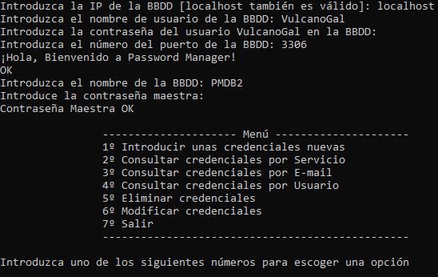

Sobre Mí
Mi nombre es Martín Rodríguez Salgueiro, tengo 21 años y soy un estudiante apasionado por la ciberseguridad
Desde hace 4 años, empecé de una forma seria a interesarme por la informática y, en concreto, la ciberseguridad; ya sea escuchando podcasts, como viendo noticias, o formándome mediante cursos pequeños online.
Con el paso del tiempo decido hacer el ciclo de ASIR, para adquirir conocimientos basados en redes y scripting en bash, junto con php.
Después de terminar dicho ciclo, aparece el curso de especialización de ciberseguridad en el San Clemente, y decido hacerlo para así poder profundizar y ampliar mis conocimientos dentro de esta rama.
Al mismo tiempo que estudio, me dedico a hacer proyectos personales para simplemente aprender más lenguajes, o por pura curiosidad sobre el funcionamiento de este.
Al igual que también hago retos y máquinas virtuales en páginas como TryHackMe o HackTheBox, para coger un poco de rodaje y soltura.
Portfolio
Debajo hai una muestra de los proyectos hechos por mí. Si quieres saber más, siempre puedes ver mi Github.


Un pequeño administrador de contraseñas hecho en Python. Con el podrás almacenar las contraseñas organizadas por:
- Servicios (Ej: DAZN, Netflix, HBO, Twitch, Gmail ...)
- Correo Electrónico
- Usuarios
Además de poder modificar o borrar lo que pongas.
Como un extra de seguridad, para poder acceder al programa necesitas saber únicamente una contraseña maestra, que desbloqueará el menú para poder consultar tus contraseñas de forma segura.
Tus contraseñas estarán cifradas de forma segura por una clave privada, por lo que cualquiera persona ajena a ti no podrá descifrar las contraseñas sin la clave privada (Aunque a ti se te enseñen descifradas).
Descargar
Estudios
- Ciclo Superior de Administración de Sistemas en Red (2019-2021)
- Curso de Especialización en Ciberseguridad en Entornos de las Tecnologías de la Información (2021-2022)
Certificaciones
- CCNA CyberOps Associate
- CySA+ [en proceso]
Contacto
También puedes seguirme en estas redes: